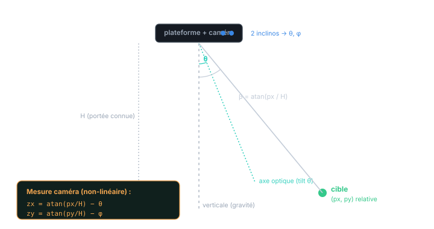
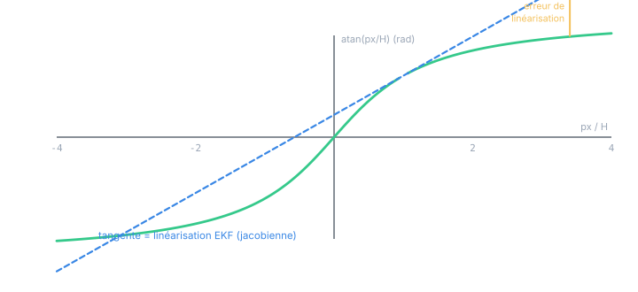
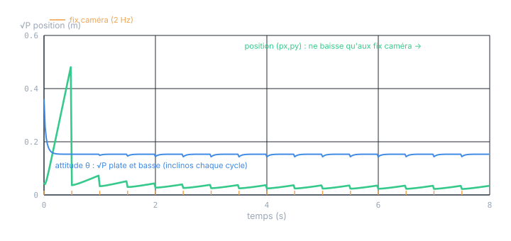
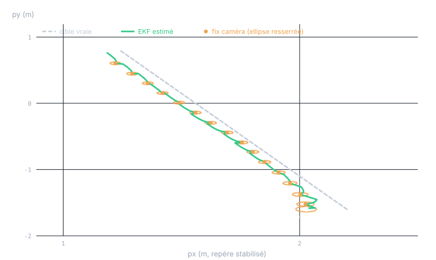

Chapitre 14 · Application
EKF : suivre une cible avec inclinomètres + caméra
Objectifs du chapitre
- Voir d'où vient la non-linéarité : la caméra mesure une direction (atan), couplée au tilt.
- Poser le modèle : dynamique linéaire, mesures inclinomètres (linéaires) et caméra (non-linéaire).
- Linéariser la mesure caméra par sa jacobienne et écrire la mise à jour EKF.
- Fusionner les cadences et comprendre l'observabilité : seul l'appareil photo « voit » la cible.
- Connaître les pièges de l'EKF (linéarisation, initialisation, wrapping) et situer l'UKF.
1. Pourquoi c'est non-linéaire
Jusqu'au chapitre 13, toutes nos mesures étaient linéaires en l'état : z = H·x. Une caméra brise cette linéarité. Elle ne mesure pas une position cartésienne : elle mesure une direction — l'angle sous lequel elle voit la cible dans son champ. Et cet angle dépend de l'orientation de la plateforme, elle-même inclinée.

L'ingrédient non-linéaire est universel dès qu'un capteur tourne ou projette : rotations (sin/cos des angles), distances (racines de sommes de carrés), perspective (division par la profondeur), directions (atan). Aucune de ces fonctions n'est de la forme H·x. La croyance cesse de rester gaussienne (chapitre 3), et les cinq équations exactes ne s'appliquent plus telles quelles.
2. L'idée de l'EKF : garder la structure, linéariser
L'EKF, vu au chapitre 10, ne réinvente rien : il garde exactement le cycle prédiction / correction, mais remplace la matrice constante par la jacobienne — la matrice des dérivées partielles de la fonction non-linéaire, évaluée à l'estimation courante. On approche localement la fonction courbe par sa tangente (chapitre 10, §4). Ici, seule la mesure est non-linéaire ; la dynamique reste linéaire, donc seule l'observation demande une jacobienne.
3. Le modèle
On suit la cible dans un repère stabilisé (aligné sur la gravité). L'état réunit la position relative de la cible, sa vitesse, et l'attitude de la plateforme :
- px, py : position relative de la cible — ce qu'on veut suivre ;
- vx, vy : sa vitesse (modèle à vitesse constante) ;
- θ, φ : tangage et roulis de la plateforme (attitude).
3.1 La dynamique (linéaire)
La cible avance à vitesse quasi-constante ; l'attitude dérive lentement (marche aléatoire, entretenue par les mouvements de la plateforme). F est donc bloc-diagonale et linéaire — la prédiction est celle des chapitres 6 et 11 :
Q porte un bruit d'accélération sur la position (comme au chapitre 11) et un bruit de taux sur l'attitude. Rien de nouveau : la non-linéarité n'est pas dans la dynamique.
3.2 Les mesures
Deux capteurs, deux natures :
- Inclinomètres (chaque cycle) : z_inc = [θ, φ] + bruit. Linéaire — H sélectionne les composantes d'attitude. Deux mises à jour scalaires (chapitre 13).
- Caméra (occasionnelle) : z_cam = [atan(px/H) − θ, atan(py/H) − φ] + bruit. Non-linéaire — c'est elle qui exige l'EKF.
4. Linéariser la caméra : la jacobienne
Notons h(x) la fonction de mesure caméra. La jacobienne H = ∂h/∂x est la matrice de ses dérivées partielles, évaluée à l'estimation courante x⁻. Pour la composante en x, hₓ = atan(px/H) − θ :
La dérivée de l'atan est H/(H²+px²) : c'est la pente de la tangente à la courbe au point courant. Loin de ce point, la tangente s'écarte de la vraie courbe — c'est l'erreur de linéarisation, le talon d'Achille de l'EKF.

5. La mise à jour EKF
La mise à jour EKF est celle du chapitre 7, avec une subtilité capitale :
Pour chaque composante de mesure (on traite en scalaire, chapitre 13) :
covariance : S = H·P⁻·Hᵀ + R ← H = jacobienne
gain : K = P⁻·Hᵀ·S⁻¹
état : x = x⁻ + K·y
covariance : P = (I − K·H)·P⁻ (forme de Joseph en pratique)
L'innovation utilise h(·) exacte (on compare la vraie mesure à la vraie mesure prédite) ; la covariance et le gain utilisent la jacobienne H (pour propager l'incertitude). Mélanger les deux — linéariser aussi l'innovation en H·x⁻ — détruit tout l'intérêt de l'EKF.
// SCL — mise à jour EKF caméra, composante x (état 6 : px,py,vx,vy,θ,φ).
// atan2 est disponible ; Hd = portée connue.
h_x := ATAN(#px / #Hd) - #theta; // mesure PRÉDITE (non-linéaire)
y := #zCamX - h_x; // innovation
// Jacobienne (ligne) : H = [ Hd/(Hd²+px²), 0, 0, 0, -1, 0 ]
j_px := #Hd / (#Hd*#Hd + #px*#px);
j_th := -1.0;
// S = H·P⁻·Hᵀ + R (n'implique que les colonnes px et θ)
S := j_px*(j_px*#P[0,0] + j_th*#P[4,0])
+ j_th*(j_px*#P[0,4] + j_th*#P[4,4]) + #Rcam;
// K = P⁻·Hᵀ / S (colonne : pour chaque état i)
FOR #i := 0 TO 5 DO
#K[#i] := (j_px*#P[#i,0] + j_th*#P[#i,4]) / S;
#x[#i] := #x[#i] + #K[#i]*y; // correction de l'état
END_FOR;
// puis P := (I - K·H)·P⁻ (forme de Joseph — voir chapitre 12)Vérifiez vos jacobiennes. Une jacobienne fausse est l'erreur EKF numéro un : le filtre semble tourner mais diverge ou devient incohérent. Test imparable : comparer chaque dérivée analytique à une différence finie (h(x+ε) − h(x))/ε sur quelques points. Si les deux ne coïncident pas, la jacobienne est buggée — pas le filtre.
6. Fusion des cadences & observabilité
On assemble comme au chapitre 13 : prédire chaque cycle ; corriger avec les inclinomètres chaque cycle (linéaire) ; corriger avec la caméra quand une image arrive (EKF). Mais une asymétrie fondamentale apparaît, liée à l'observabilité (chapitre 9).
Les inclinomètres observent θ, φ — l'attitude — mais pas la position de la cible px, py. Seule la caméra « voit » la cible. Conséquence : l'incertitude d'attitude reste basse en permanence (recalée chaque cycle), tandis que l'incertitude de position ne peut baisser qu'aux instants de fix caméra — et gonfle entre eux.

Malgré la non-linéarité, la cadence lente de la caméra et l'incertitude initiale, l'EKF converge et suit fidèlement la cible dans le repère stabilisé.

Observabilité et portée connue. Ici H (la portée) est connue, donc un seul fix caméra suffit à situer la cible (on inverse l'atan). Si la portée était inconnue (caméra monoculaire pure), une seule image ne donnerait qu'une direction — la distance resterait inobservable sans mouvement relatif (parallaxe). C'est le cœur des problèmes de « bearing-only tracking » : l'observabilité y dépend de la trajectoire, pas seulement des capteurs.
7. Les pièges de l'EKF
- Erreur de linéarisation : si la fonction est très courbée à l'échelle de l'incertitude, la tangente est une mauvaise approximation → estimation biaisée, voire divergence. Remède : réduire l'incertitude (meilleurs capteurs, meilleure init), ou passer à l'UKF (§8).
- Initialisation : l'EKF linéarise autour de l'estimation courante. Une init trop fausse linéarise au mauvais endroit et peut ne jamais converger. Bonne pratique : initialiser la position depuis le premier fix caméra plutôt que de deviner.
- Wrapping des angles : innovations et fonctions d'angle doivent être ramenées dans
(−π, π] (utiliser
atan2, normaliser y). Oublier le wrapping fait « sauter » le filtre de 2π près des discontinuités. - Jacobienne fausse : le piège du §5 — à vérifier par différences finies.
- Cohérence : la NIS (chapitre 12) reste l'outil de diagnostic, mais attention — une NIS correcte ne garantit plus l'optimalité (perdue avec la linéarisation), seulement la cohérence locale.
8. L'UKF, sans jacobienne
Quand la linéarisation devient trop grossière — forte courbure, grande incertitude — le filtre « unscented » (UKF) offre une alternative. Au lieu de dériver la fonction, il propage un petit jeu de points choisis (sigma points) à travers la vraie fonction non-linéaire, puis reconstruit moyenne et covariance à partir de leurs images. Il capture la courbure au deuxième ordre, sans aucune jacobienne à calculer ni à vérifier — pour un coût comparable. Sur notre cas caméra, l'UKF gérerait mieux les grands décalages initiaux. Il fera l'objet d'un chapitre dédié.
9. Sur PLC
- Pas de gain constant. La jacobienne dépend de l'état, donc P et K dépendent des mesures : on ne peut pas précalculer un gain (contrairement au chapitre 12). L'EKF impose le filtre complet en ligne.
- Coût maîtrisé quand même : mesures traitées en scalaire (une division chacune),
jacobienne = quelques formules fermées, état de dimension modeste.
atan2est disponible en SCL. - Robustesse :
LREAL, forme de Joseph, resymétrisation (chapitre 12), normalisation des angles, et gating par NIS pour rejeter une image aberrante. - Initialisation depuis le premier fix caméra ; P initial large sur la position, petit sur l'attitude (bien mesurée d'emblée).
Exercices
Exercice 1 — Vérifier une jacobienne
Pour hₓ = atan(px/H) − θ avec H = 3, vérifiez la dérivée ∂hₓ/∂px en px = 2 par différence finie (ε = 10⁻⁴).
Voir la solution
Analytique : H/(H²+px²) = 3/(9+4) = 3/13 ≈ 0,2308.
Différence finie : [atan((2,0001)/3) − atan((1,9999)/3)] / 10⁻⁴. atan(0,66670) − atan(0,66663) ≈ 0,0000231, divisé par 10⁻⁴ → ≈ 0,231. ✓ Les deux coïncident : la jacobienne est correcte. C'est le test à faire systématiquement avant de déployer un EKF.
Exercice 2 — Pourquoi la position gonfle-t-elle entre les fix ?
Les inclinomètres corrigent l'attitude à chaque cycle. Pourtant l'incertitude de position (figure 14.3) monte entre les fix caméra. Expliquez, et dites ce qui la borne malgré tout.
Voir la solution
Les inclinomètres n'observent que θ, φ : la position px, py est inobservable par eux (§6). Entre deux fix caméra, la position n'est donc que prédite (modèle à vitesse constante) — et la prédiction gonfle la covariance (+ Q, chapitre 6). Ce qui la borne : le modèle de mouvement lui-même. Tant que la vitesse est bien estimée, la position prédite reste correcte quelques instants ; P croît lentement, pas explosivement. Un modèle de vitesse fiable « achète » du temps entre les fix — d'où l'utilité d'estimer vx, vy dans l'état.
Récapitulatif
- La caméra mesure une direction (atan) couplée au tilt → mesure non-linéaire ⇒ EKF. Rotations / projections / distances sont toutes non-linéaires.
- État [px, py, vx, vy, θ, φ] : dynamique linéaire ; seule la mesure caméra l'est pas.
- Jacobienne caméra : ∂(atan(px/H))/∂px = H/(H²+px²), ∂/∂θ = −1. Tangente locale (fig. 14.2).
- Mise à jour EKF : innovation avec h(·) exacte, covariance/gain avec la jacobienne H. Ne jamais confondre les deux.
- Fusion : prédire + inclinos chaque cycle (linéaire) + caméra à l'occasion (EKF). Observabilité : seuls les fix caméra réduisent l'incertitude de position, qui « respire » ; l'attitude reste précise.
- Pièges EKF : erreur de linéarisation, initialisation, wrapping des angles, jacobienne fausse (vérifier par différences finies). UKF = alternative sans jacobienne.
- Sur PLC : pas de gain constant (jacobienne dépend de l'état) → filtre complet, mais scalaire,
LREAL, Joseph, init depuis le premier fix.
La suite. Deux prolongements naturels : un chapitre UKF (sigma points, sans jacobienne) sur ce même cas caméra, et une fusion IMU complète (inclinomètre + gyromètre avec estimation de biais). Le socle ne bouge plus : modéliser, linéariser si besoin, fusionner les cadences, vérifier la cohérence.